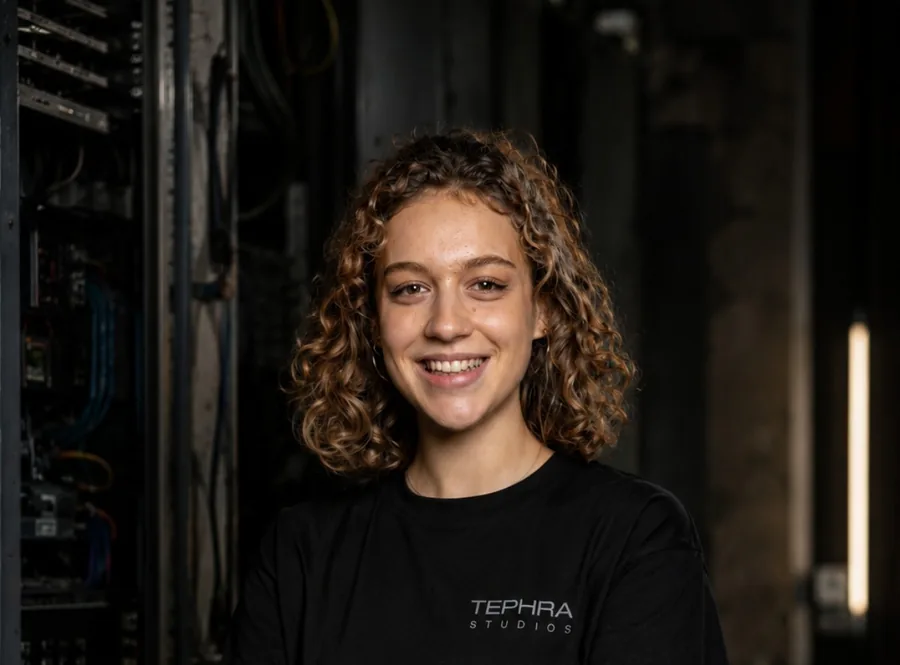
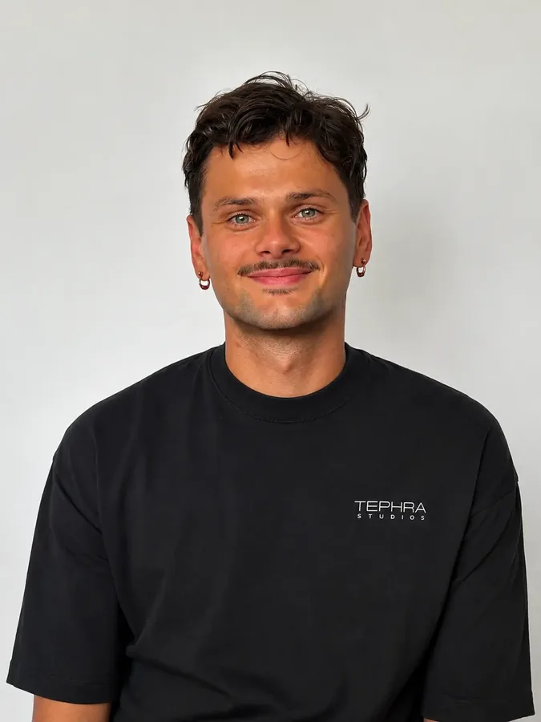

Jobportale kommen oft zu spät
Gute Kräfte schauen selten täglich in Stellenbörsen. Viele reagieren erst, wenn ihnen ein Betrieb außerhalb der Suche auffällt.
Küche, Service, Bar und Aushilfe entscheiden schnell: Wirkt der Betrieb fair? Ist er organisiert? Passt der Ton? Genau dort setzen wir an.

Direkt mit Tina & PeterKein Callcenter, kein Vertriebler dazwischen
Viele gute Leute arbeiten bereits. Sie wechseln trotzdem, wenn ein Betrieb online fair, organisiert und glaubwürdig wirkt.
Gute Kräfte schauen selten täglich in Stellenbörsen. Viele reagieren erst, wenn ihnen ein Betrieb außerhalb der Suche auffällt.
Gute Bezahlung und ein gutes Team versprechen fast alle. Was zählt, ist der konkrete Grund, warum jemand zu euch wechseln sollte.
Am Handy muss der nächste Schritt sofort klar sein. Wenn Interessenten lange Formulare sehen, sind sie oft weg, bevor sie anfangen.
Ein kleines Lokal braucht eine andere Ansprache als ein Hotel oder ein Caterer. Eine Seite für alle überzeugt niemanden.
Vier Schritte, die aufeinander aufbauen, von der Sichtbarkeit bis zur Bewerbung.
Wir schauen uns Rollen, Arbeitszeiten, Teamstruktur und echte Wechselgründe an. Ohne diese Details bleibt jede Anzeige flach.
Wir bringen auf den Punkt, warum jemand bei euch anfangen oder zu euch wechseln sollte. Was macht den Job bei euch besser als die nächste Anzeige im Feed?
Wir bauen die Ansprache so, dass sie auf Social Media und am Handy funktioniert. Und so, dass sie zu eurem Betrieb passt, nicht zu irgendeinem.
Interessenten melden sich mit wenigen Angaben, ihr bekommt genug Kontext für den ersten Kontakt. Danach schauen wir, wo Leute abspringen, und verbessern es.
Kein Konzept in einer Schublade. Alles, was zwischen dem ersten Blick im Feed und dem Gespräch bei euch steht.
Schriftlich festgehalten, was euch als Arbeitgeber ausmacht. Nutzt ihr danach überall, nicht nur in Anzeigen.
Bilder und kurze Videos mit Hook und Text, gemacht für den Feed, nicht für einen Prospekt.
Aufgesetzt, ausgespielt und betreut. Facebook und Instagram, zielgenau auf eure Region und euer Fach.
Eine eigene Seite, auf der sich passende Leute in Sekunden ein Bild von euch machen und direkt bewerben.
Wenige Felder, kein Lebenslauf nötig, in unter zwei Minuten erledigt. Der Rest kommt im Gespräch.
Vorformulierte Antworten, damit ihr innerhalb von Stunden reagiert und nicht erst nächste Woche.
Wir arbeiten lieber mit weniger Betrieben, bei denen es funktioniert, als mit allen.
Wir sind Peter und Tina aus Wien.
Peter hat jahrelang mit seinem Vater als Elektriker gearbeitet und weiß, wie eine Baustelle wirklich läuft. Vorher Pädagogik, also Kommunikation und die Frage, wie Menschen entscheiden. Diese Kombination ist der Grund, warum unsere Texte nicht nach Marketing klingen.
Tina kommt aus Architektur und Gestaltung. Sie sorgt dafür, dass alles, was von uns rausgeht, aussieht wie von einem Betrieb, den man ernst nimmt.
Wir sind keine Personalvermittlung und keine Headhunter. Wir schicken euch keine Lebensläufe und kassieren dafür ein Vermittlungshonorar. Wir bauen euch ein eigenes System, das euch gehört und weiterläuft.
Wir sind auch keine Berater, die eine Präsentation abliefern und dann verschwinden. Wir setzen um.

Architektur und Design. Sorgt dafür, dass euer Auftritt so aussieht, wie eure Arbeit ist.

Jahrelang Elektriker, davor Pädagogik. Kennt die Baustelle und weiß, wie Leute entscheiden.
Ein kurzes Gespräch reicht, um zu sehen, ob wir zusammenpassen. Wir schauen uns euren Auftritt vorher an und sagen euch ehrlich, wo der größte Hebel liegt.
Direkt mit Tina & Peter
Die Leistung dahinter im Detail: Positionierung, Creatives, Kampagne und ein kurzer Bewerbungsweg.
Auch von unsKundengewinnungAufträge, die nicht vom Zufall abhängen. Für alle, die von Empfehlungen leben und mehr Kontrolle wollen.
Auch von unsWebsite & AuftrittEine Seite, die zu eurer Arbeit passt. Schnell, am Handy sauber, bei Google auffindbar.
Diese Seite dreht sich um Personal für die Gastronomie. Dieselben Leute, die euch Bewerbungen bringen, bauen euch auch die Website oder holen euch neue Gäste und Firmenkunden.
← Zurück zur Startseite